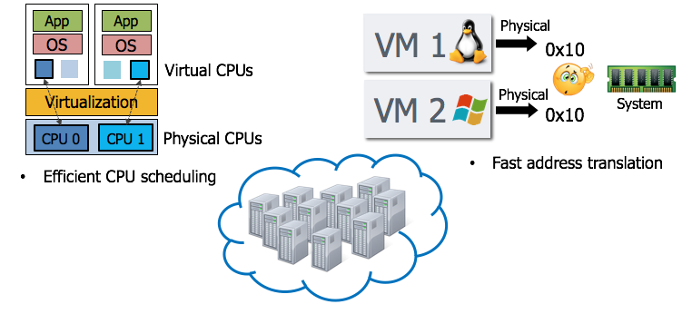
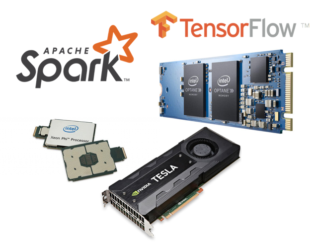

학생 모집
- 저희 연구실에서 컴퓨터 시스템 연구(아래에 소개)에 관심있는 학부 및 대학원생을 모집합니다.
- 대학원생의 경우 학비 보조 및 연구비 지원이 가능하고, 학부생의 경우도 연구비는 지원 가능합니다. (연구 장소 및 장비 제공)
- 유학 및 대학원 진학을 고려하고 있거나, 연구 경험을 해보고자 하시는 분들도 환영합니다.
- 관심이 있으신 분은 jsahn@ajou.ac.kr로 이메일을 주세요.
연구 소개
Keywords: Computer Architecture, Operating Systems, Virtual Machine, Cloud Computing, Runtime Systems본 연구실에서는 크게 미래의 클라우드 및 데이터센터를 위한 컴퓨터 시스템 전반(아키텍처, 운영체제, 가상 머신, 런타임 시스템)에 관심을 가지고 연구를 진행하고 있습니다.
-
가상 머신 기반의 클라우드 환경을 고려한 아키텍처 설계 및 시스템 소프트웨어 설계 및 구현

예를 들어, 아마존 클라우드 등에서 사용되고 있는 오픈 소스 하이퍼바이저 Xen을 기반으로 새로운 메모리 메니지 관리 기법을 연구하거나, 프로세서 스케줄링 기법을 개선하는 등의 연구를 진행 하고 있습니다. 또한, 가상화된 환경에서 컴퓨터 프로세서를 어떻게 설계하는 것이 효율적인지에 가상 메모리에 관한 연구도 진행하였습니다.
특히, 최근의 프로세서에 도입된 기술들 (캐쉬 공간 관리, 메모리 밴드위스 관리 등)을 어떻게 효율적으로 사용할지에 관해서도 관심있게 연구하고 있습니다.
-
새로운 컴퓨팅 자원(FPGA, GPU, Xeon-Phi, NVM, Optane 등등)을 활용한 분산 인공지능/데이터 분석 플랫폼(Apache Spark, Google TensorFlow) 개선

최근 활발하게 사용되고 있는 인공지능 및 데이터 분석 플랫폼에 관심을 가지고 지켜보고 있으며, 이들의 성능 및 효율을 개선하기 위한 생각을 많이 하고 있습니다. 특히, 소프트웨어를 설계할 때 새롭게 제시되고 있는 하드웨어를 함께 이해하는 것에 초점을 맞추고 있습니다.
-
컴퓨터 아키텍처(CPU/GPU) 개선 (Microarchitecture, Cache organization, Virtual memory support 등)

하나의 프로세서 칩 안에 코어의 수가 점점 늘어남에 따라서 프로세서 내의 자원들을 어떻게 구축하고 관리하는 것이 효과적인지 연구하고 있습니다.